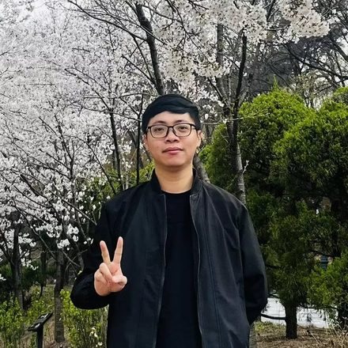
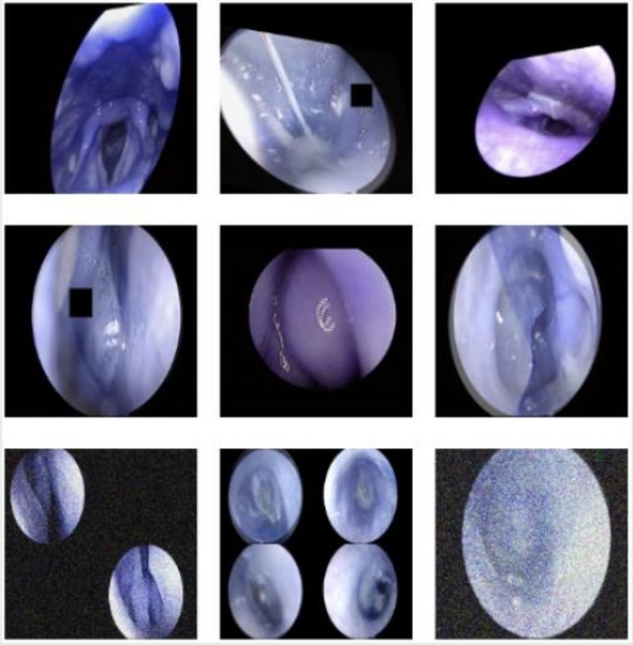
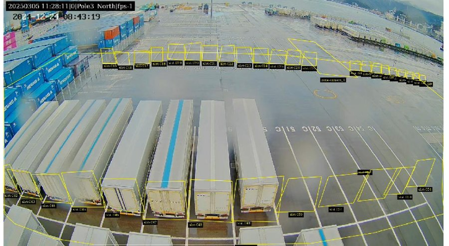
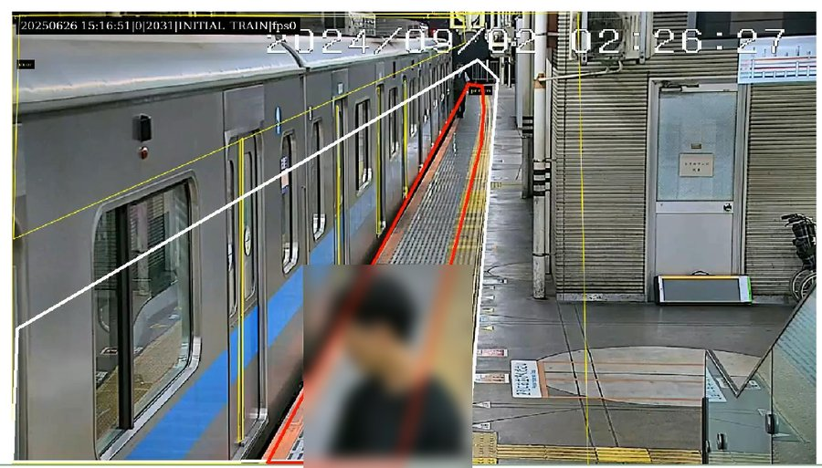

Diffusion and flow matching for medical data
Generative models built on diffusion and flow matching, applied to medical data.
PhD student · Korea University
I research diffusion and flow matching for medical data and gene expression. Before that, temporal action detection and cheapfake and misinformation detection.

Generative models built on diffusion and flow matching, applied to medical data.
The same generative methods, applied to gene expression.
Cross-modal models that flag out-of-context images and captions, including training with generative synthetic data.
Checking where a photo came from with reverse image search and source reputation.
Learning features that generalize, to locate actions in natural driving video.
Domain generalization without forgetting, and ensembles of action recognition networks.
Korea University, South Korea
Cybercore Co., Ltd. · Ho Chi Minh City
Researched, reproduced and adapted state-of-the-art models for autonomous driving, face detection, pose estimation, abnormal object detection, action recognition and head pose estimation. Deployed on edge devices (Jetson family) with the DeepStream SDK.
Track 4 winner, NVIDIA AI City Challenge 2022 · 1st public / 3rd private, AI Zalo Challenge 2020 (traffic sign detection)
Self-employed
Bronze medal in VinBigData Chest X-ray Abnormality Detection, with VFNet (5-fold) and YOLOv5 ensembles and medical-image augmentations.
Cloud Nine Solutions · Ho Chi Minh City
Research on generative adversarial networks.
Global CyberSoft JSC · Vietnam
Korea University
VNUHCM – University of Science
VNUHCM – University of Science
Full list on Google Scholar and alphaXiv.

Vision-language model for classifying ENT endoscopy images into 7 anatomical classes (ear, nose, throat, vocal cords). Team WAS placed 1st on Track 1 (Image Classification) of the ENTRep Challenge at ACM Multimedia 2025.
View code on GitHub
A top-down 3D shooter built on the Sơn Tinh – Thủy Tinh legend. Runs in the browser on phones and desktop, with chapters, bosses and three difficulty modes.
Open the game page
YOLO-based detection to estimate the real camera angle against the ideal top-down view in a container yard, correcting the container and plane boxes so crane operators get an accurate footprint.

Camera-based detection of the platform door zone and people near it, feeding a safety-management dashboard used to flag risk at train stations in real time.